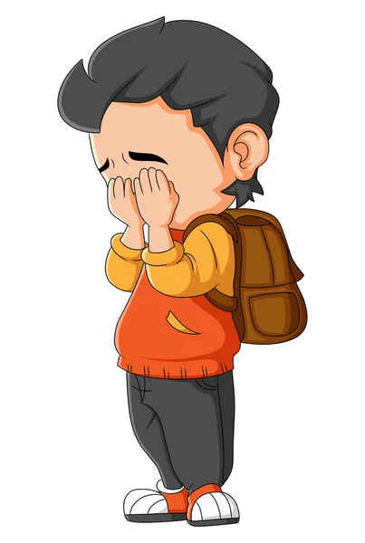

Herkese merhaba. Benim adım Doğuhan ve bu benim ilk yazılım projem. Şimdi ise sizlere kendim hakkımda olan ve hayatımdan bahsedeceğim küçük bir proje ile kendimden bahsedeceğim. 31 temmuz 2000 tarihinde hayata merhaba dedim. Ailemin anlattığına göre inanılmaz zeki bir çocukluk geçirdiğim ve henüz 6 aylıkken abime 'goga, goga' diye çağırmaya çalıştığım anlaşılmış. (abimin adı Gökhan). Daha sonrasında iki buçuk yaşındayken amansız bir hastalığın pençesine düştüm. Hastalığın ismi Çölyak hastalığı.
8 yaşıma geldiğimde ailem o zamanın modern oyun konsolu olan playstation 2 almıştı ve çılgınlar gibi oyun oynuyordum. Dersler, okul, ödevler umrumda bile değildi. sadece beni tek ilgilendiren şey oyun oynamaktı. Oyun konsolunun alınmasıyla birlikte ingilizce dili ile tanışmıştım. Ve kısa süre içinde ingilizce öğrenmeye başlamış ilkokul zamanı tek iyi olan dersim ingilizce idi. İngilizce öğretmenim birgün bana annenle görüşmem gerekiyor doğuhan velini çağırırmısın dediğinde annem okula gitti ve ingilizce öğretmenim anneme doğuhanın ingilizcesi çok iyi onu kursa mı gönderiyorsunuz demişti ve annemde hayır hocam oyunlardan öğrendi dediğinde büyük bir şaşkınlık meydana gelmişti.
İlkokul ve ortaokul bu şekilde geçtikten sonra liseyi Erzincan da okuma kararı almıştım. Babamın işi nedeniyle 2010 yılında babam ve abim birlikte işlettikleri dükkanı istanbuldan erzincana taşıdıktan sonra ben ve annemde 2014 yılında erzincana göçmüştük. Lise dönemim erzincanda geçeceği için ilk taşındığımız sene oldukça zorluk çekmiştim. Çünkü buradaki insanlar çok farklı ve ortama adapte olmamda gerektiği için ilk sene derslerimde epey zorlanmıştım. Daha sonra lise 1 2 3 4 derken mezun olmuş ve ne yapmam gerektiğine karar vermem gerekiyordu. 2021 Aralık ayında Online eğitim platformu olan BTK Akademi sitesinde yazılım öğrenmeye karar vermiştim. Ve yaklaşık 11 ayın sonunda kendi çapımda Front-end developer olmuştum. Sitede ki html css ve javascript dillerini öğrendikten sonra şuan da ise sektörde ihtiyaç duyulan front end developer olma yolunda kendimi geliştirmeye devam ediyorum.